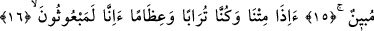

O DİRİLTME
KORKUNÇ BİR SESTEN
İBARETTİR
11. Şimdi sor onlara! Yaratma bakımından onlar mı daha zor, yoksa bizim
yarattığımız (insanlar) mı? Şüphesiz biz kendilerini yapışkan bir çamurdan
yarattık.
12. Hayır, sen şaşıyorsun. Halbuki onlar alay ediyorlar.
13. Kendilerine öğüt verildiği vakit öğüt almazlar.
14. Bir mucize görseler alay ederler.
15. Bu ancak açık bir büyüdür, derler.
16. «Gerçekten biz öldüğümüz, toprak ve kemik olduğumuz zaman mı,
diriltileceğiz?»
17. «İlk atalarımız da mı (diriltilecek)?»
18. De ki: Evet, hem de hor ve hakir olarak (diriltileceksiniz).
19. O (diriltme) korkunç bir sesten ibaret olacak, o anda hemen onların gözleri
açılıp etrafa bakacaklar.
20. (Durumu gören kâfirler:) Eyvah bize! Bu ceza günüdür, derler.
21. İşte bu, yalanlamış olduğunuz hüküm günüdür.
Ey Muhammed! Yerme ve tartışma maksadıyla “Şimdi sor onlara!” yani Mekke
müşriklerine. Burada hitap Hz. Peygamber’e (s.a.)’dir. “ ” zamiri Mekke müşriklerini
” zamiri Mekke müşriklerini
ya da bazı tefsirlerde olduğu gibi Âdemoğullarını ifade etmektedir. “, fetva
istemektir. ve kelimeleri müşkil ve zor hükümlere cevap vermek anlamına
gelir. “Ona fetva sordum bana şöyle fetva verdi” ifadesi Arapça’da “
şeklinde ifade edilir. Bazıları der ki; kelimesi kökündendir. ise kuvvetli